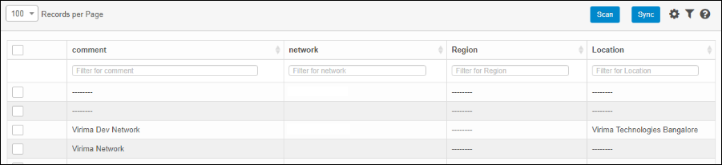
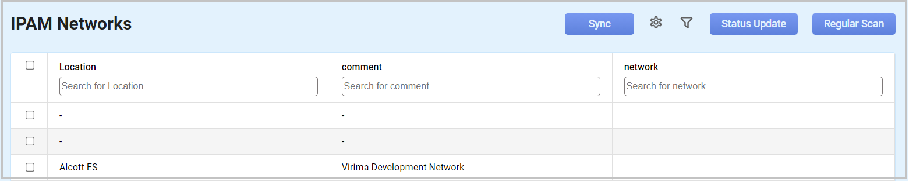
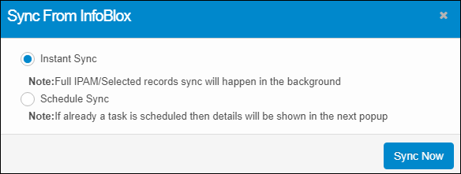
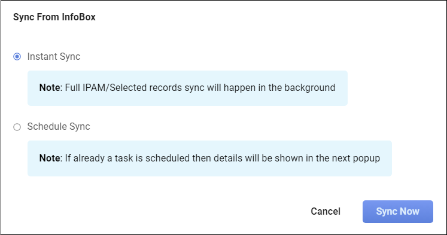
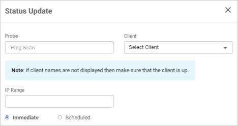
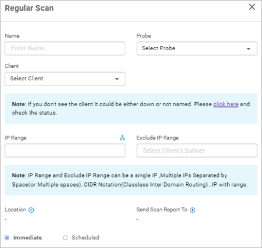

IPAM Networks
Use this function to enable planning, tracking, and managing the information associated with an Internet Protocol address existing in the monitored network environment. It updates the following details to the application user:
| Infoblox delivers essential technology to enable customers to manage, control, and optimize DNS, DHCP, and IPAM (DDI). Infoblox technology helps businesses automate complex network control functions to reduce costs and increase security and up time – building bulletproof, scalable, and efficient networks. |
IPAM Procedure
The procedure to perform IPAM is as below:

Use this function to configure Infoblox on the installed machine.
| A client needs to be created to associate a client with an Infoblox credential. |
In the navigation pane, select Admin > Integration > Infoblox Configuration. The Infoblox Credential dialog box displays. By default, the Add New Infoblox Credential option is selected.


Add New Infoblox Credential
| 1. | In the InfoBlox Credential dialog box, select Add New Infoblox Credential. |
| 2. | In the Username field, enter the user name of the Infoblox installed on the machine. |
| 3. | In the Password field, type the related password associated with the Username. |
| a. | To change the password, click Change Password. The InfoBlox Credential dialog box updates and displays the Show Password checkbox and the Cancel Change option. |
| b. | In the Show Password field, click the checkbox to show the entered password. |
| c. | Click Cancel Change to cancel the password change. |


| 4. | In the Host field, enter the IP address of the InfoBlox machine installed on the Host box. |
| 5. | In the Client field, click the drop-down list and select the applicable client. You can search in this field by typing the first few letters of the client name to display a list of possible matches. |
| The name of the client displays only if it is functionally "up." |
| 6. | When all selections/entries are made, click Save. |
Auto Pick Credential from Discovery Application
| 1. | In the Infoblox Credential dialog box, select Auto pick credential from Discovery application. |


| 2. | In the Host field, enter the IP Address of the machine on which Infoblox is installed. |
| 3. | In the Client field, click the drop-down list and select the client's name. The list only contains the name of those clients in "up" status. |
| 4. | Click Save. |
Use this function to monitor and sync the Internet Protocol address from Infoblox that exists in the monitored network environment.
| 1. | In the navigation pane, select Discovery Scan > IPAM Networks. The IPAM window displays. |


| 2. | Refer to the sections below for details on each function. |
Scan
Use this function to identify the devices that are connected and communicating in a network. The Discovery application identifies the Device Types, Host Name, and Other Information of the device based on the probe selected for the scan. Users can initiate a scan Immediately or Schedule a Scan based on the requirement.
| Start the Discovery Application before initiating a scan. |
Sync (Instant and Schedule)
Use this function to plan, track, and manage information associated with an Internet Protocol address in the monitored network environment.
| 1. | In the IPAM Networks window, click Sync. The Sync From InfoBlox window displays. |


| 2. | Select Instant Sync to import the records from the Infoblox server. |
| 3. | Select Schedule Sync to import the records at a scheduled time. |
| a. | In the Schedule Report Frequency drop-down list, select the required value. |
| b. | Check “Second” and/or “Minute” and/or “Hour” and/or “Day” and/or “Month” and/or “Weekday” option(s) according to the time selected for the Schedule Report Frequency. |
| c. | Click Add to update the schedule details accordingly. |
| 4. | Click Sync Now to enable the operation. |
Status Update
Use this function to select one or more networks (subnet) from the IPAM Networks page, one or more IP Addresses from the IPAM Network’s IP list tab, then perform a status update scan. This pings every IP Address in the network's IP List, and updates its status to Used or Unused. All pingable IPs are set to Used and non-pingable to Unused.
| 1. | Select a line item. |
| 2. | Click Status Update. |

| 3. | Enter the Probe to scan. |
| 4. | In the Client field, click the drop-down list and select the applicable client. |
| 5. | Enter an IP Range. |
| 6. | Select if the update should be Immediate or Scheduled. If Scheduled is selected, configure the Scan Frequency. |
| 7. | When all selections/entries are made, click Status Update. |
Regular Scan
Use this function to perform a full-fledged scan based on the probe selected by the user.
| 1. | Select an item in the list. |
| 2. | Click Regular Scan. |

| 3. | Enter a Name for this network. |
| 4. | In the Probe field, click the drop-down list and select the applicable probe. |
| 5. | In the Client field, click the drop-down list and select the applicable client. |
| 6. | Enter an IP Range to include or exclude. |
| 7. | Click the plus + sign to add a Location and Send Scan Report To recipient(s). |
| 8. | Select if the scan should be Immediate or Scheduled. If Scheduled is selected, configure the Scan Frequency. |
| 9. | When all selections/entries are made, click Run. |
| Not all functions include an option to edit record line items shown in the main window. |
| 1. | Navigate to the window containing the record to edit. |
| 2. | Click the line containing the record. The applicable window or dialog box displays. |
| 3. | Make the necessary modifications. |
| 4. | Click Save or Add, as applicable. |
To view details for the selected IP, click the Details tab.
To view schedule details, click the Schedule Details tab.
To view the history of activity, such as when changes were made, click the History tab.
| Deleting is a permanent action and cannot be undone. Deleting may affect other functionality and information in the application such as data in configured reports, fields in windows, selectable options, etc. Therefore, be sure to understand the potential effects before making a deletion. |
| 1. | Click the line that contains the item to delete. |
| 2. | From the Select Actions drop-down list, choose Delete. If a confirmation message is displayed, type Delete and click Deleteto confirm. |
Other Functions and Page Elements